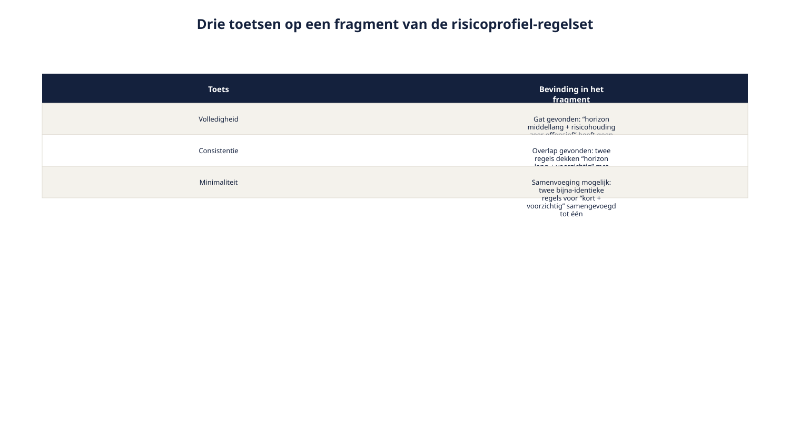

Cursus Requirements engineering · Niveau 2 (CPRE Advanced Level) · Deel 16 van 30
Data en beslisregels voor veertig rijen.
Marloes Huisman levert de rekenregels die bepalen welk risicoprofiel bij een deelnemer past — ruim veertig regels, opgebouwd uit leeftijd, beleggingshorizon en risicohouding. De beslistabel uit niveau 1 is nog steeds correct, maar wordt bij deze omvang onoverzichtelijk. Dit deel geeft u het gereedschap om die schaal aan te kunnen: wanneer een tabel werkt en wanneer een boom, hoe u de gegevens erachter conceptueel vastlegt, en hoe u vaststelt of de regelset zelf volledig, consistent en minimaal is.
8secties
±2uleestijd + werkboek
7controlevragen
3modelkwaliteitstoetsen §16.4
Positionering. Deze cursus is een voorbereiding op de CPRE Advanced Level-certificering van IREB en is uitdrukkelijk geen vervanging van het officiële syllabus- en examenmateriaal van IREB, te raadplegen via ireb.org.
Deel 15 bracht de context-, doel- en gedragsmodellen van Wegwijzer op programmaniveau in kaart: hoe het systeem zich verhoudt tot de deelnemeradministratie, KERN en het externe vermogensbeheerplatform, en welk gedrag zich over die systeemgrenzen heen afspeelt. Dit deel gaat een laag dieper, bij precies het onderdeel dat in die modellen tot nu toe grotendeels een "black box" bleef: de rekenregels zelf, waarmee Wegwijzer op basis van leeftijd, beleggingshorizon en risicohouding een risicoprofiel voorstelt.
Die rekenregels zijn het eigendom van Marloes Huisman, actuarieel adviseur, en precies het onderwerp van spanningsveld 2 uit het casusdossier: de complexiteit van de rekenregels. Waar niveau 1 volstond met een eenvoudige beslistabel voor een aanleveringscorrectie (deel 5), is de schaal hier een andere orde: leeftijd (drie categorieën), beleggingshorizon (drie categorieën) en risicohouding (vijf categorieën) leveren tot 45 mogelijke combinaties, en met een paar uitzonderingsregels erbovenop ruim veertig regels in de praktijk. Met dit deel wordt spanningsveld 2 afgerond — deel 15 legde het programmaniveau vast, dit deel legt de rekenregels zelf vast.
Na dit deel kunt u:
een eenvoudig conceptueel datamodel opstellen voor een requirementsdomein;
kiezen tussen een beslistabel en een beslisboom, afhankelijk van de aard van de combinaties;
een beslisregelset toetsen op volledigheid, consistentie en minimaliteit;
de basisbegrippen van DMN als notatie plaatsen, met een correcte verwijzing naar waar de diepgang wordt behandeld;
uitleggen hoe dit deel spanningsveld 2 afrondt.
02
De casus: Marloes' veertig regels
⏱ 10 min
Marloes levert de rekenregels aan die bepalen welk risicoprofiel bij een deelnemer past: een combinatie van leeftijd (drie categorieën), resterende beleggingshorizon (drie categorieën) en risicohouding uit de vragenlijst (vijf categorieën, van zeer voorzichtig tot zeer offensief). In de meest simpele opzet zijn dat tot 45 mogelijke combinaties, en in de praktijk, met een paar uitzonderingsregels erbovenop, ruim veertig regels.
"Ik heb geen behoefte aan een mooi plaatje dat de nuance wegpoetst. Als jullie deze veertig regels tot vijf pijlen op een dia terugbrengen, klopt de dia niet meer."
"Niemand wil de regels vereenvoudigen, Marloes — we willen ze leesbaar krijgen zonder ze te veranderen."
"Bewijs dat maar. Ik wil elke combinatie kunnen terugvinden, precies zoals ik hem heb aangeleverd."
Marloes' wantrouwen is niet onredelijk: bij ruim veertig regels ligt het gevaar van stilzwijgende vereenvoudiging voortdurend op de loer, en zij is degene die er inhoudelijk voor instaat. De beslistabel-aanpak uit niveau 1, deel 5 — één rij per combinatie — is hier technisch nog steeds bruikbaar, en verliest geen enkele nuance: elke regel blijft een eigen, volledig controleerbare rij. Wat wél verandert is de bruikbaarheid van die tabel als platte, lineaire lijst: bij veertig-plus rijen is hij moeilijk in één oogopslag te doorgronden, ook al is hij formeel correct. Dit deel geeft het gereedschap om met die schaal om te gaan, zonder aan Marloes' eis — niets weglaten, alles herleidbaar — voorbij te gaan.
03
Van beslistabel naar beslisboom
⏱ 18 min
Een beslistabel (niveau 1, deel 5) legt elke combinatie van voorwaarden als een aparte rij vast. Dat werkt uitstekend zolang de voorwaarden ongeveer even zwaar wegen en er relatief weinig combinaties zijn. Bij veertig-plus rijen wordt een tabel moeilijk in één oogopslag te doorgronden, ook al is hij formeel nog correct.
Een beslisboom legt dezelfde logica vast als een opeenvolging van vragen: eerst de belangrijkste onderscheidende voorwaarde, dan de volgende, enzovoort — met als resultaat een boomstructuur waarin niet elke combinatie een eigen, losse rij hoeft te zijn.
Voorbeeld — het risicoprofiel als boom, sterk vereenvoudigd
Beleggingshorizon
Risicohouding
Uitkomst
Kort (< 10 jaar)
Voorzichtig
Profiel A (zeer defensief)
Overig
Profiel B (defensief)
Middellang (10–20 jaar)
Voorzichtig
Profiel B (defensief)
Neutraal
Profiel C (neutraal)
Offensief
Profiel D (offensief)
Lang (> 20 jaar)
Voorzichtig
Profiel C (neutraal)
Overig
Profiel D of E, afhankelijk van leeftijd
Figuur 16-1 — dezelfde regelset als platte tabel (veertig rijen) naast dezelfde regelset als boom (aanzienlijk compacter)
Wanneer welke vorm
Kies een tabel wanneer de voorwaarden ongeveer gelijkwaardig zijn, het aantal combinaties beperkt blijft (grofweg tot een man of twintig), en u wilt dat elke combinatie in één oogopslag apart controleerbaar is — bijvoorbeeld bij een audit of formele goedkeuring, waar "laat me elke rij zien" een reële eis kan zijn. Verwacht dit bij Petra's zorgplicht-toetsing.
Kies een boom wanneer één voorwaarde duidelijk het zwaarst weegt en de andere er ondergeschikt aan zijn — zoals bij het risicoprofiel, waar horizon zwaarder weegt dan risicohouding — en wanneer u vooral wilt dat de logica te volgen is voor iemand die de redenering wil begrijpen, niet alleen wil controleren.
In de praktijk: vaak is een boom het communicatiemiddel — om uit te leggen en te bediscussiëren, bijvoorbeeld met Sven en Corrie — en een tabel het formele, volledige vastleggingsmiddel, voor Petra's toetsing en voor de bouw. Beide vormen kunnen naast elkaar bestaan voor dezelfde regelset, precies zoals niveau 1, deel 5, al liet zien dat meerdere werkproducten voor dezelfde requirement kunnen bestaan, zolang duidelijk is welke leidend is. Dat is ook precies wat Marloes' eis toestaat: de boom vereenvoudigt de weergave, niet de regel.
Controlevragen
Uit Werkboek deel 16, Opdracht 16.1 — Tabel of boom?
1Vijf onafhankelijke ja/nee-voorwaarden die alle vijfendertig combinaties gelijkwaardig laten meewegen, gebruikt voor een formele audit — en: een regelset die door Petra rij voor rij tegen de zorgplichteisen gecontroleerd moet worden. Welke vorm past bij elk?Toon antwoord
Tabel, in beide gevallen. Bij de audit: gelijkwaardige voorwaarden, een beperkt aantal combinaties, en een audit vraagt om elke rij apart controleerbaar. Bij Petra's toetsing: formele toetsing per combinatie vraagt volledige, individueel controleerbare rijen.
2Een regel waarbij eerst gekeken wordt of een deelnemer ouder of jonger dan 55 is, en pas daarna, afhankelijk daarvan, een heel ander stel vervolgvragen relevant wordt — en: een regelset die aan het fondsbestuur gepresenteerd moet worden om te bespreken en goed te keuren, waarbij het vooral gaat om het overtuigen van de logica. Welke vorm past bij elk?Toon antwoord
Boom, in beide gevallen. Bij de leeftijdssplitsing: één voorwaarde (leeftijd) is duidelijk onderscheidend en bepaalt welke vervolgvragen relevant zijn — een boom volgt die structuur natuurlijk, een platte tabel zou hier onnodige lege of dubbele cellen opleveren. Bij het fondsbestuur: overtuigen en uitleggen vraagt een volgbare redenering, geen rijenoverzicht. Bespreekpunt: in de praktijk worden vaak beide vormen naast elkaar gebruikt voor dezelfde regelset, met een verschillend doel per vorm — precies zoals bij het risicoprofiel.
04
Het onderliggende datamodel
⏱ 14 min
Voordat beslisregels goed te formuleren zijn, moet helder zijn over wélke gegevens ze eigenlijk gaan. Een eenvoudig conceptueel datamodel (in requirements-taal, geen technisch databaseschema) brengt de kernentiteiten en hun onderlinge relaties in kaart.
Voorbeeld — kernentiteiten voor het risicoprofieldomein
Relatie
Betekenis
Deelnemer vult in Vragenlijstantwoord
de vastgelegde antwoorden op de risicohoudingsvragenlijst
Figuur 16-2 — het conceptuele datamodel als entiteit-relatiediagram, met de vier kernentiteiten en hun relaties
Dit datamodel is bewust conceptueel: het toont entiteiten, relaties en, waar relevant, de belangrijkste attributen, zonder technische velden, sleutels of datatypes — dat is het werk van een data-architect of DBA, niet van de requirements engineer. Wat de requirements engineer wél levert, is de betekenis: wat is een Risicoprofiel, hoe hangt het samen met een Vragenlijstantwoord, en welke regel bepaalt de relatie.
Raakvlak
Voor de volledige uitwerking naar een logisch (LDM) en fysiek (PDM) datamodel: zie de Ductus-datacursus over datamanagement, data-analyse en data governance. Dit deel behandelt uitsluitend het conceptuele niveau dat een requirements engineer nodig heeft om beslisregels correct te funderen.
Controlevraag
Uit Werkboek deel 16, Opdracht 16.2 — Het conceptuele datamodel uitbreiden
1Breid het datamodel uit paragraaf 16.3 uit met minstens twee nieuwe entiteiten of relaties die relevant zijn voor Wegwijzer. Beschrijf voor elke toevoeging kort welke betekenis hij toevoegt.Toon antwoord
Voorbeelduitbreiding: Fondsbestuurbesluit — de entiteit die vastlegt welk besluit (bijvoorbeeld het aantal risicoprofielen) geldig is, met een geldigheidsperiode. Relatie: een Fondsbestuurbesluit bepaalt de kaders voor Risicoprofiel. Communicatiemoment — vastlegging van wanneer en hoe een deelnemer over zijn Risicoprofiel is geïnformeerd, relevant voor de zorgplicht-onderbouwing. Relatie: Deelnemer ontvangt Communicatiemoment, gekoppeld aan een Risicoprofiel.
Een beslisregelset — tabel of boom — kan er overtuigend uitzien en toch gebreken bevatten die pas bij gebruik aan het licht komen. Drie toetsen, uit te voeren voordat een regelset wordt opgeleverd.
Volledigheid. Is elke mogelijke combinatie van invoerwaarden gedekt door minstens één regel? Een gat in de dekking betekent dat een deelnemer met een bepaalde combinatie helemaal geen profiel toegewezen krijgt — een fout die in productie pas opvalt wanneer die specifieke combinatie zich voordoet, vaak lang na oplevering.
Consistentie. Bestaat er een combinatie die door twee verschillende regels wordt gedekt, met een tegenstrijdige uitkomst? Dit gebeurt gemakkelijker dan het klinkt, vooral bij een boom met meerdere vertakkingen die elkaar per ongeluk overlappen.
Minimaliteit. Zijn er regels die, zonder verlies van betekenis, kunnen worden samengevoegd? Te veel bijna-identieke regels maken een set onnodig moeilijk te onderhouden en te controleren — al mag minimaliteit nooit ten koste gaan van de andere twee toetsen: soms is een net iets uitgebreidere set duidelijker dan een compactere.

Figuur 16-3 — de drie toetsen toegepast op een fragment van de risicoprofiel-regelset, met een gevonden gat, een gevonden overlap, en een sameneenvoeging
Hoe u deze toetsen in de praktijk uitvoert
Bij een kleine regelset, zoals de beslistabel over aanleveringscorrecties uit niveau 1, deel 5, is handmatig doorlopen vaak voldoende. Bij veertig-plus regels is dat foutgevoelig — precies het soort taak waar systematisch, stap-voor-stap doorlopen (of geautomatiseerde ondersteuning, waar deel 20 verder op ingaat) meerwaarde heeft. Werk in elk geval systematisch: doorloop elke voorwaardecombinatie methodisch, bijvoorbeeld horizon-voor-horizon en binnen elke horizon alle risicohoudingen, in plaats van de tabel of boom "op gevoel" te controleren.
Waarom dit Marloes overtuigt
Deze drie toetsen zijn geen vereenvoudiging van haar regels — ze zijn een controle óp haar regels, die precies aantoont dat er niets stilzwijgend is weggelaten of tegenstrijdig geworden. Dat is een ander verkooppunt dan "overzichtelijker", en het punt dat bij Marloes wél landt.
Controlevragen
Uit Werkboek deel 16, Opdracht 16.3 — Volledigheid, consistentie, minimaliteit testen
Regel
Horizon
Risicohouding
Leeftijd < 50?
Uitkomst
1
Kort
Voorzichtig
Ja
Profiel A
2
Kort
Voorzichtig
Nee
Profiel A
3
Kort
Offensief
Ja
Profiel B
4
Lang
Voorzichtig
Ja
Profiel B
5
Lang
Voorzichtig
Ja
Profiel C
6
Lang
Offensief
Nee
Profiel D
(Let op: niet elke combinatie van horizon × risicohouding × leeftijd staat in deze tabel — dat is opzettelijk.)
1Zoek een schending van volledigheid in deze regelset.Toon antwoord
De combinatie "Kort, Offensief, Nee" (horizon kort, risicohouding offensief, leeftijd 50+) komt in de tabel niet voor. Een deelnemer met precies deze combinatie krijgt geen profiel toegewezen.
2Zoek een schending van consistentie in deze regelset.Toon antwoord
Regel 4 en regel 5 dekken exact dezelfde combinatie (Lang, Voorzichtig, Ja) maar met een verschillende uitkomst (Profiel B versus Profiel C). Dit moet worden uitgezocht en gecorrigeerd voordat de set bruikbaar is. Bespreekpunt: het is een veelgemaakte fout om deze tegenstrijdigheid als "gewoon een tikfout" af te doen zonder het als een consistentieprobleem te benoemen, terwijl het precies dat is.
3Beoordeel of er regels zijn die samengevoegd kunnen worden (minimaliteit).Toon antwoord
Regel 1 en regel 2 hebben dezelfde uitkomst (Profiel A) en verschillen alleen in de leeftijdsvoorwaarde — dit suggereert dat leeftijd voor deze combinatie (Kort, Voorzichtig) niet onderscheidend is en de twee regels samengevoegd kunnen worden tot één regel zonder de leeftijdsvoorwaarde.
06
DMN en de CPRE Advanced Level-toets
⏱ 14 min
DMN (Decision Model and Notation) is een gestandaardiseerde manier om beslisregels te modelleren, met een vaste notatie voor beslistabellen en een expliciete manier om aan te geven hoe regels zich tot elkaar verhouden wanneer er meerdere tegelijk van toepassing zouden kunnen zijn — een zogeheten hit policy, bijvoorbeeld: de eerste toepasselijke regel geldt, of: alle toepasselijke regels moeten worden gecombineerd.
Dit deel behandelt DMN niet in de volle breedte — dat is het onderwerp van de Ductus-cursus BPMN, CMMN en DMN. Wat hier van belang is: als requirements engineer moet u weten dát een gestandaardiseerde notatie bestaat, waarom hij bestaat — om precies de problemen uit paragraaf 5, volledigheid en consistentie, systematisch te kunnen toetsen, desnoods met tooling — en wanneer u een architect of procesmodelleur erbij haalt om een regelset in DMN te formaliseren.
Raakvlak
De volledige DMN-notatie, inclusief hit policies en de koppeling met BPMN-processen en CMMN-cases, wordt behandeld in de Ductus-cursus BPMN, CMMN en DMN.
Wat dit deel voor de CPRE Advanced Level-toets betekent
Voor de certificering telt hier vooral het onderscheid tussen twee soorten kennis: de modelleertechnieken zelf — beslistabel, beslisboom, conceptueel datamodel, de drie kwaliteitstoetsen — horen tot de kern van het Modeling-werkgebied en zijn tot in detail examinabel. De notatiestandaard DMN is op dit niveau vooral herkenning: wat hij is, waarom hij bestaat, en wanneer hij wordt ingezet, zonder dat u zelf een DMN-tabel met hit policies hoeft te kunnen opstellen — dat hoort bij de gespecialiseerde procesmodelleercursus, niet bij de CPRE Advanced Level-syllabus. Ken het onderscheid tussen de twee: het is precies het soort vraag dat in een examen als valkuil wordt gebruikt.
07
Toegepast op het risicoprofiel
⏱ 14 min
Marloes' veertig regels worden nu, met het gereedschap van dit deel:
Gestructureerd als boom voor het gesprek met Sven en Corrie — horizon als eerste onderscheidende vraag, risicohouding als tweede.
Vastgelegd als volledige tabel voor Petra's zorgplicht-toetsing en voor de bouw, met elke combinatie apart controleerbaar.
Onderbouwd met het conceptuele datamodel, zodat helder is wat een Risicoprofiel precies is en hoe het aan een Vragenlijstantwoord en een Beleggingshorizon hangt.
Getoetst op volledigheid, consistentie en minimaliteit, systematisch doorlopen per horizon-categorie.
Dit is precies de tegenhanger van het WGP 2.0-patroon uit niveau 1: waar een complexe regel daar in enkele zinnen tekst verdwaalde, krijgt de risicoprofiel-regel hier vanaf het begin een vorm die zijn complexiteit aankan — én die Marloes' eis van volledige herleidbaarheid waarmaakt.
Wat verandert er als u iteratief werkt?
Beslisregels groeien vaak incrementeel: een eerste, grove versie van de boom in een vroege sprint, verfijnd naarmate Marloes meer uitzonderingen aanlevert. Bij elke toevoeging moeten de drie kwaliteitstoetsen opnieuw — of geautomatiseerd — worden uitgevoerd; een regelset die bij versie 1 consistent en volledig was, kan dat na een kleine toevoeging niet meer zijn. Dit is een concreet voorbeeld van wijzigingsbeheer (niveau 1, deel 9) toegepast op modellen in plaats van op losse tekstuele requirements — en tegelijk een vroege illustratie van de twee kloksnelheden uit spanningsveld 4: het ontwikkelteam kan de boom binnen een sprint bijstellen, maar elke bijstelling die de uitkomst voor een deelnemer verandert, moet alsnog langs Petra en, waar het de collectieve kaders raakt, langs het fondsbestuur.
Controlevraag
Uit Werkboek deel 16, Opdracht 16.4 — Van tabel naar boom
1Herstructureer de (gecorrigeerde) regelset uit opdracht 16.3 als beslisboom, met horizon als eerste onderscheidende vraag. Beschrijf in één zin waarom deze volgorde (horizon eerst) al dan niet de meest logische is.Toon antwoord
Nadat het gat (combinatie "Kort, Offensief, Nee") is opgevuld en de tegenstrijdigheid tussen regel 4 en 5 is opgelost door voor één van beide te kiezen, kan de boom bijvoorbeeld beginnen met horizon (Kort/Lang), gevolgd door risicohouding, en pas als derde — waar relevant — leeftijd. Bespreekpunt: of horizon inderdaad de meest logische eerste vraag is, hangt af van welke voorwaarde in de praktijk het scherpst onderscheidt; een onderbouwde andere volgorde (bijvoorbeeld risicohouding eerst) is ook een goed antwoord, zolang de redenering klopt — het gaat om het besef dat de volgorde een keuze is, niet een vast gegeven.
08
Spanningsveld 2 afgerond
⏱ 10 min
Met dit deel is spanningsveld 2 — de complexiteit van de rekenregels — volledig gedekt: context- en doelmodellen op programmaniveau en systeemoverstijgend gedrag (deel 15), en nu data en beslisregels met bijbehorende kwaliteitstoetsen (dit deel). De Modeling-module van CPRE Advanced Level is hiermee compleet.
Marloes' zorg uit sectie 2 — dat een leesbare weergave onvermijdelijk nuance zou wegpoetsen — wordt hiermee niet weggenomen door haar gelijk te geven of ongelijk te geven, maar door het probleem anders te stellen: een boom en een tabel zijn geen twee versies van de waarheid met verschillende precisie, maar twee weergaven van dezelfde, volledig getoetste regelset, elk geschikt voor een ander gesprek. Dat is precies het soort onderscheid dat bij een actuarieel adviseur, die gewend is aan volledige herleidbaarheid, standhoudt.
Vooruit naar deel 17. Deel 17 opent de Management-module met attributen, prioritering en baselines op programmaniveau — de verdieping die spanningsveld 3, beheer over systeemgrenzen, aanpakt.
Verder naar deel 17
Deel 17 opent de Management-module: attributen toekennen aan requirements, prioriteren over deelsystemen heen, en baselines vaststellen — het beheerkader waarbinnen de modellen uit dit deel en deel 15 verder leven.